Arch 最大的魅力在于，他的高度可定制化安装。网上有提供好的资源，只需往系统中集成即可。但是有很多教程在图形化界面安装方面比较千篇一律。不论组件是否需要，全部安装。最终导致系统体积较大。
此篇教程的目的在于，最少化安装组件。装出最轻的系统。在前一篇教程的基础上，开始吧。
启动系统，登录个人账户（非root账户）。
安装 gnome 显示管理
有打包好的 gnome 组件，安装包较多。此处不用，首先只安装两个模块。gdm 和 terminal 终端。要求先进入图形化界面
1
2
3
4
| sudo pacman -S tilix # 安装图形化终端,不使用 gnome-terminal，
sudo pacman -S gdm # 安装显示管理组件
sudo systemctl enable gdm # 启用显示管理
sudo systemctl start gdm # 启动显示管理
|
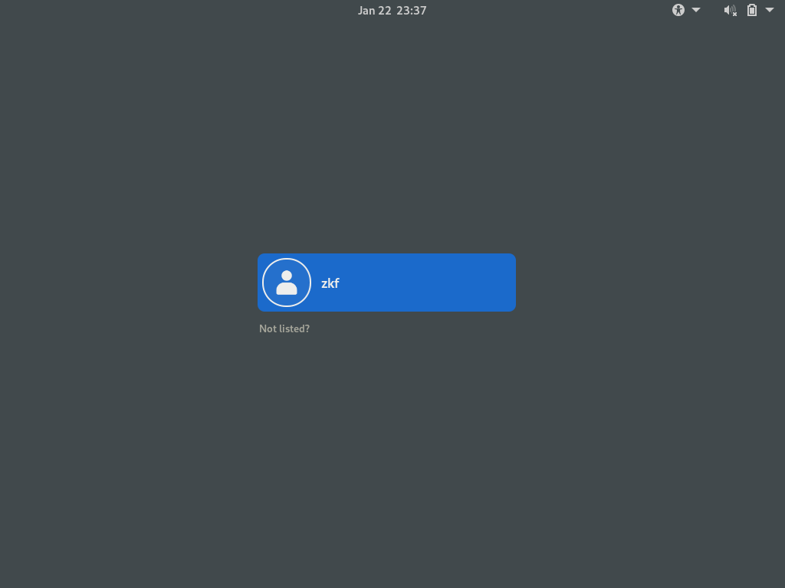
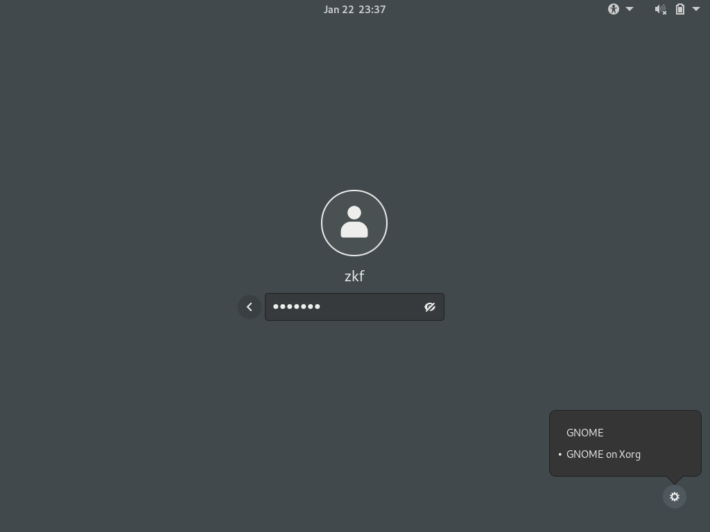
使用 gnome on xorg 登录。
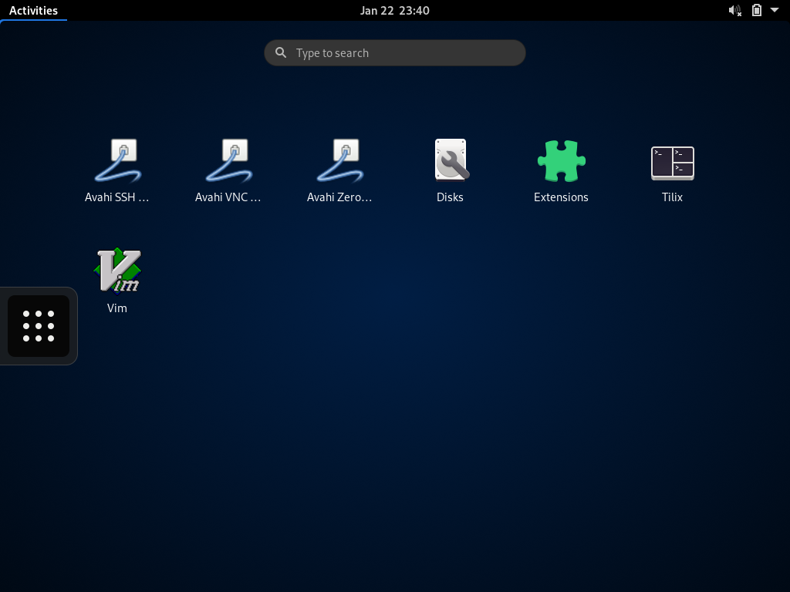
没有多余的程序。查看磁盘空间，系统盘仅用 4G ，比一个安卓系统都小。
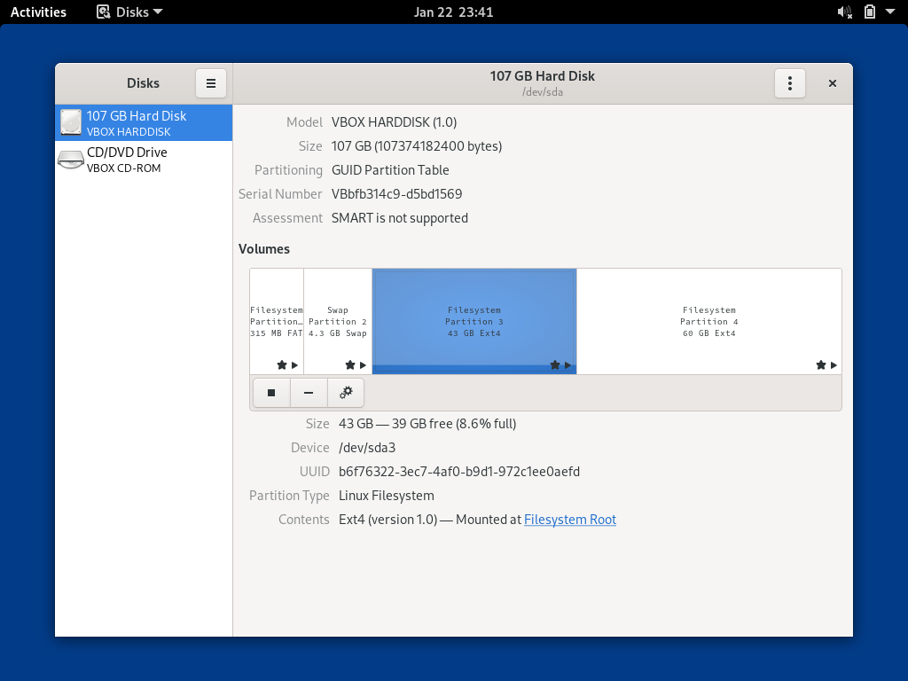
下面将一步一步完善此系统。
添加 archlinuxcn 源
此类源可以方便的安装一些国内应用，比如网易云音乐。
1
2
3
4
5
6
7
8
9
10
11
| sudo vim /etc/pacman.conf
# 打开 multilib 前的注释
[multilib]
Include = /etc/pacman.d/mirrorlist
# 添加 archlinuxcn
[archlinuxcn]
SigLevel = Optional TrustAll # 此行没有时，需要安装 keyring
Server = https://mirrors.ustc.edu.cn/archlinuxcn/$arch
# 更新源
sudo pacman -Syy
sudo pacman -S archlinuxcn-keyring # 安装密钥对
|
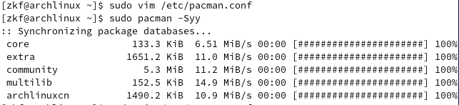
最后两个表示新添加的源。
浏览器
1
2
| sudo pacman -S firefox # 火狐浏览器
sudo pacman -S google-chrome # 谷歌浏览器
|
中文字体
使用浏览器打开百度首页，惊奇的发现显示不了汉字。莫慌。
1
2
| # 安装文泉艺字体
sudo pacman -S wqy-zenhei
|
其他字体见Arch Wiki。
gnome 美化
火狐浏览器打开 gnome 扩展，安装浏览器插件。
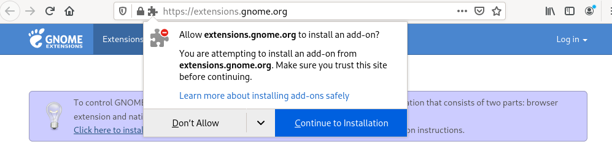
1
2
3
4
| # 安装美化工具与扩展
sudo pacman -S gnome-shell-extensions
sudo pacman -S chrome-gnome-shell
sudo pacman -S gnome-tweaks
|
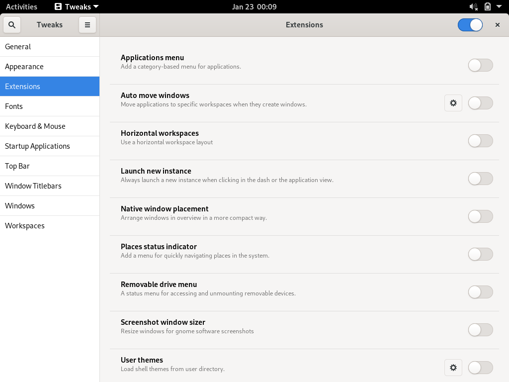
此时 tewak 自带很多扩展组件可以使用。
1
2
3
4
5
6
| # 安装 AUR ，解决部分 pacman 安装不了的库
sudo pacman -S yay yaourt
# 安装 vimix 主题
# 选中 4 ，vimix-gtk-themes
# 选中 6 ，vimix-icon-themes
sudo yay vimix
|
注销后，重新登录。tweaks 配置如下：
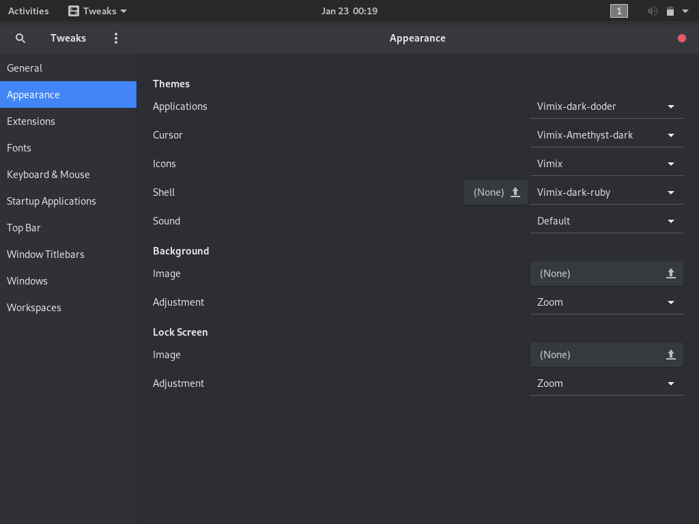
在窗口标题栏（Window Titlebars）打开最大化和最小化按钮。
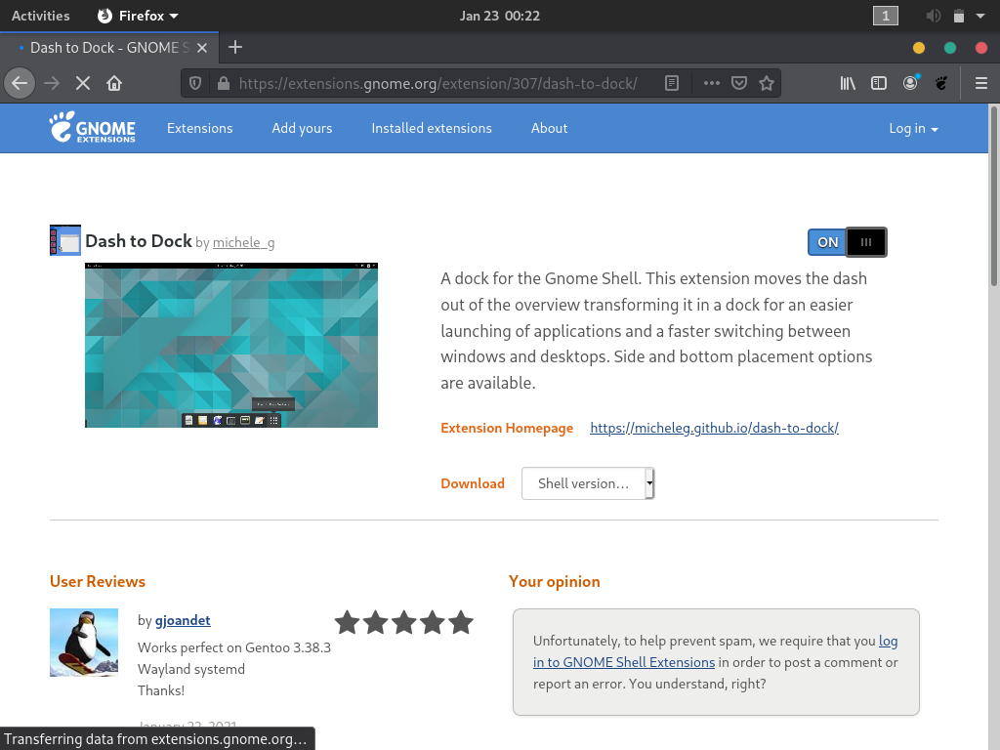
通过浏览器安装 Dock 工具。在 Tweaks 中，配置 Dock 。
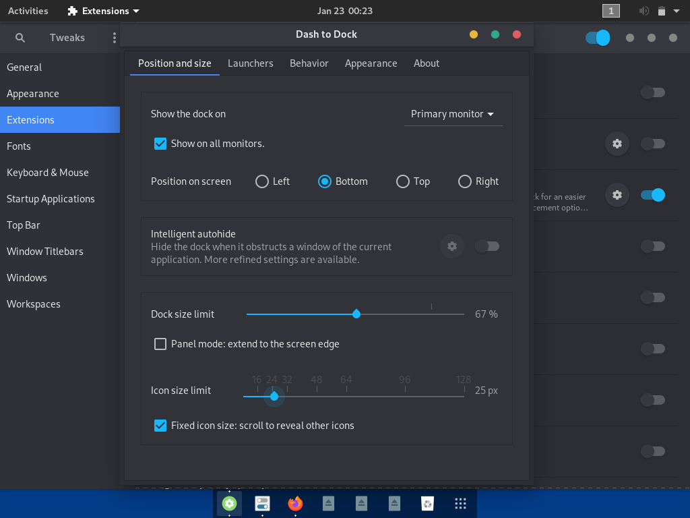
通过以上配置，桌面效果也算不丑了。只是缺一张好看的壁纸。
终端美化 zsh
使用 Oh My ZSH。
由于国内网络的通病，官方教程的下载方式，提示 403 错误。需要手动下载安装脚本。
- 打开其github地址：https://github.com/ohmyzsh/ohmyzsh
- 找到 install.sh 脚本位置：tools/install.sh
- 复制其文件内容。
1
2
3
4
5
6
7
8
9
10
| vim oh-my-zsh.sh # 粘贴刚刚复制的内容，保存并退出。
sudo chmod +x oh-my-zsh.sh # 给脚本添加可执行权限
sudo pacman -S zsh # 安装 zsh
# 执行主题下载脚本，需要 git 支持。之前安装 AUR 时已经同步下载。
sh oh-my-zsh.sh
vim .zshrc # 编辑配置文件
i # 进入编辑模式
# 修改 ZSH_THEME="ys"
:wq # 保存并退出
source .zshrc # 使修改生效
|
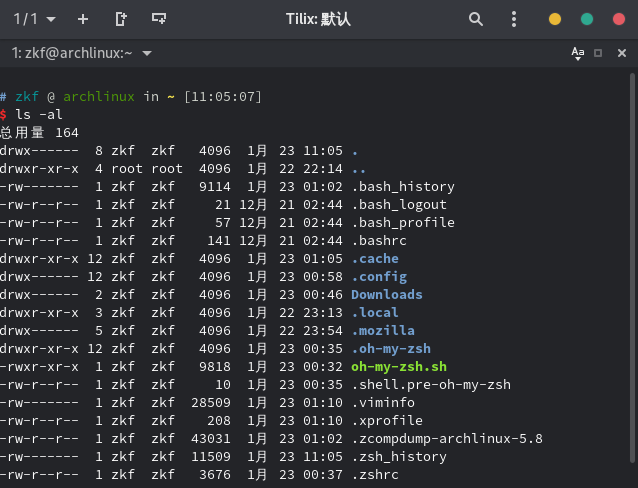
如上，美化操作已完成。
设置中心
切换不了壁纸。因为还缺少控制中心程序。
1
| sudo pacman -S gnome-control-center
|
此时可以自在的切换壁纸了。
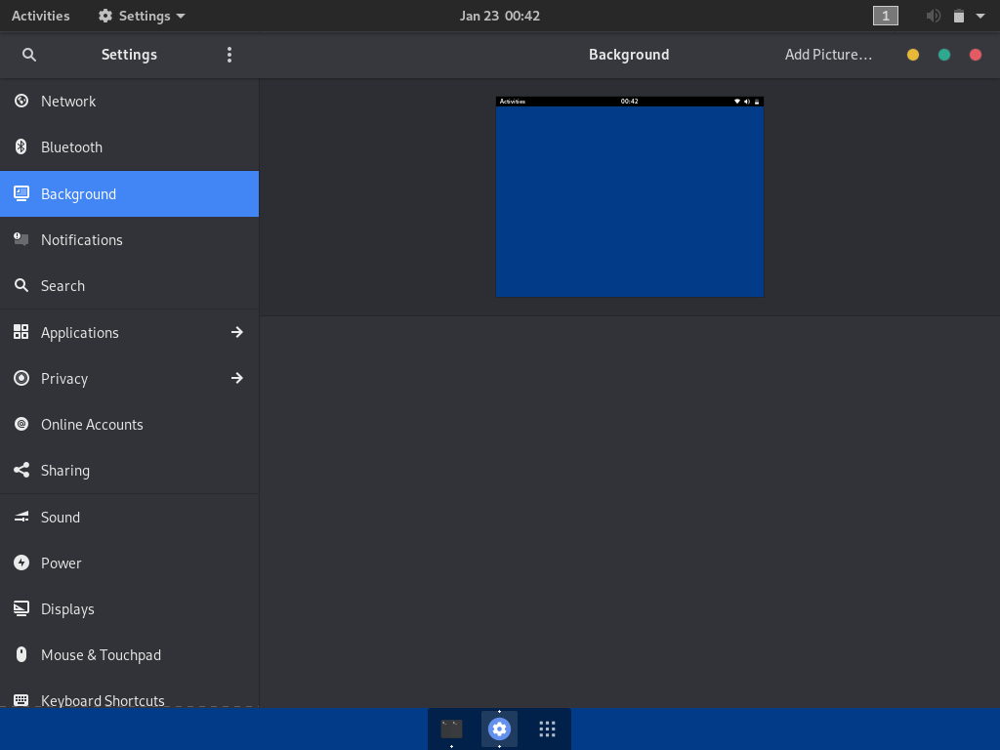
但是在网络标签中还无法查看网络连接情况。
网络
1
2
3
4
5
6
7
8
9
| # 安装网络管理，并启动服务，之后在设置中可以查看
sudo pacman -S networkmanager
sudo systemctl enable NetworkManager
sudo systemctl start NetworkManager
# 无线网驱动，通常有两种方式安装
sudo pacman -S linux-firmware # 通用 linux 驱动
# 如果是博通网卡
sudo pacman -S broadcom-wl
|
文件管理
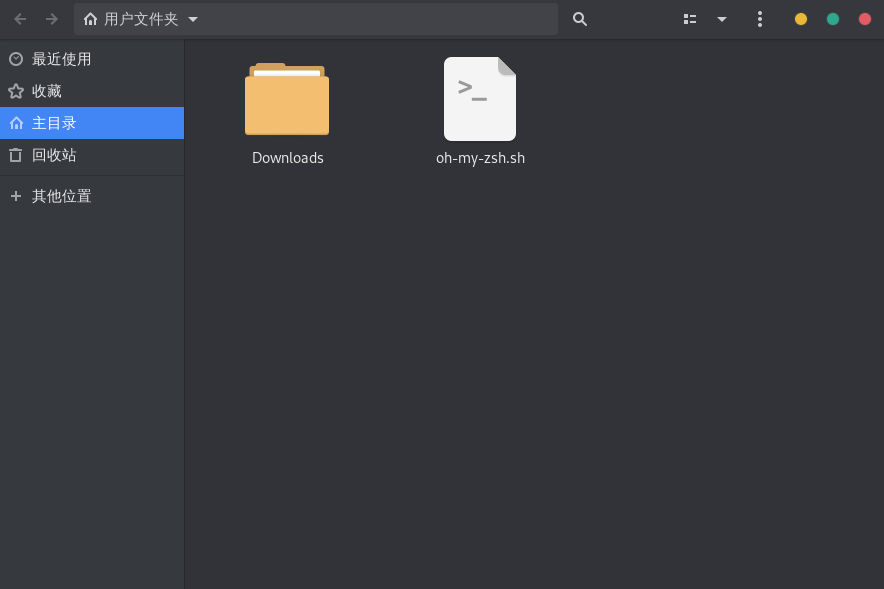
中文与输入法
1
2
3
4
5
6
7
8
9
10
11
12
13
14
15
16
| sudo pacman -S fcitx-im # 安装输入法框架
sudo pacman -S fcitx-configtool # 安装配置模块
sudo pacman -S fcitx-googlepinyin # 安装 google 输入法
vim ~/.xprofile # 添加输入法配置，之前使用 gome on xorg 登录才会有效
export XIM=fcitx
export XIM_PROGRAM=fcitx
export GTK_IM_MODULE=fcitx
export QT_IM_MODULE=fcitx
export XMODIFIERS=@im=fcitx
sudo vim /etc/locale.conf # 添加中文支持，然后注销或重启生效
LANG=en_US.UTF-8
LANG=zh_CN.UTF-8
|
至此，图形化界面和 gnome 美化部分已经完成。附上本机电脑的美化效果。后续操作还是建议多找找资料。

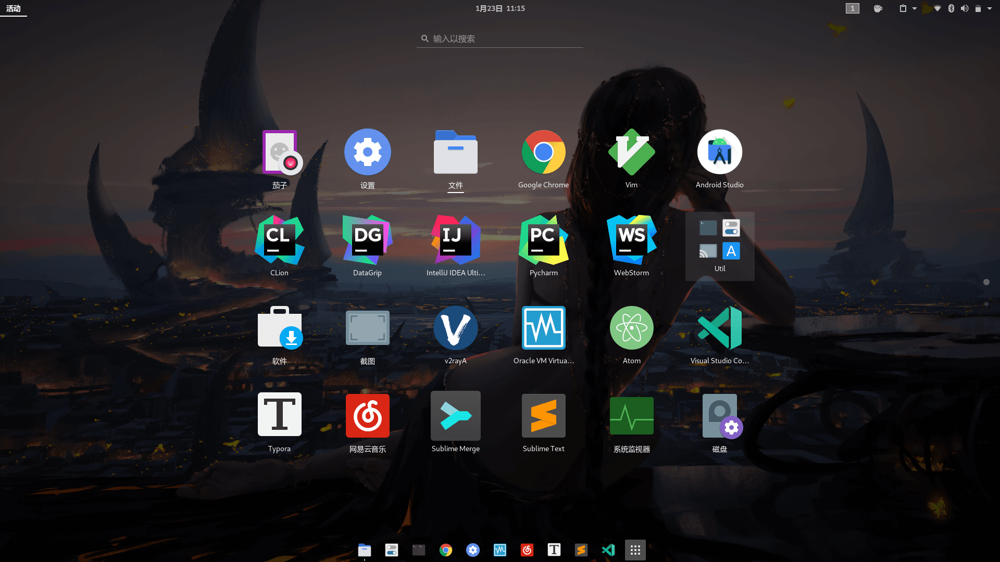
其他常用软件
1
2
3
4
5
| sudo pacman -S electronic-wechat # 微信
sudo pacman -S linuxqq # qq
sudo pacman -S netease-cloud-music # 网易云音乐
sudo pacman -S gwenview # 看图工具
yay wps-office # wps office
|